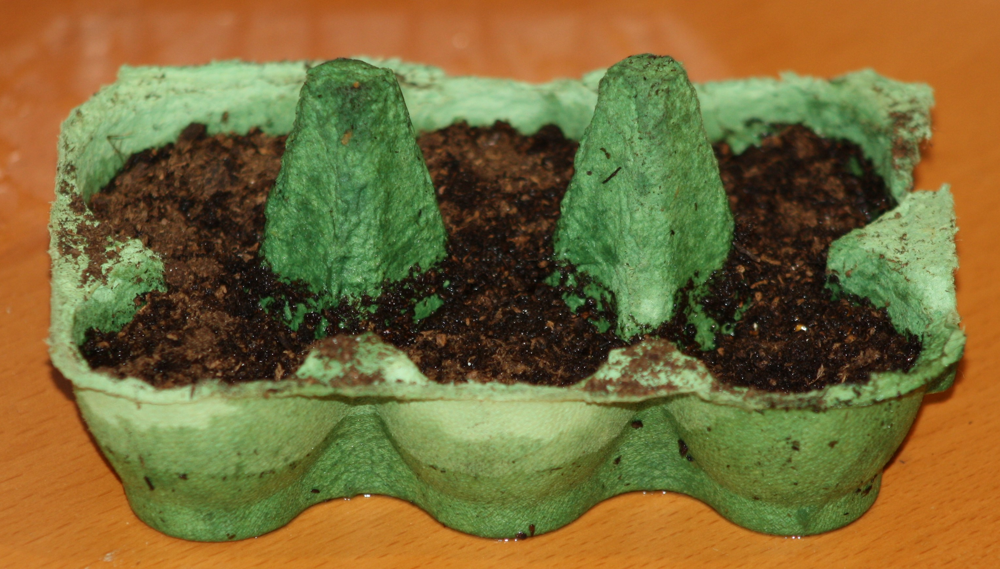
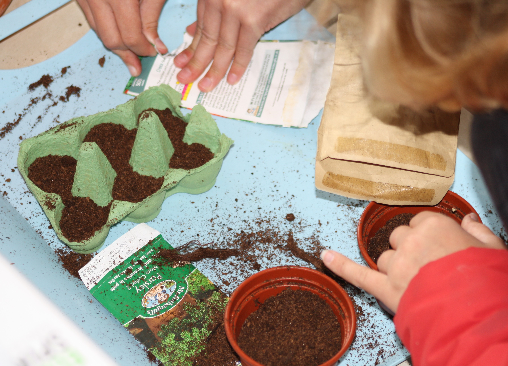
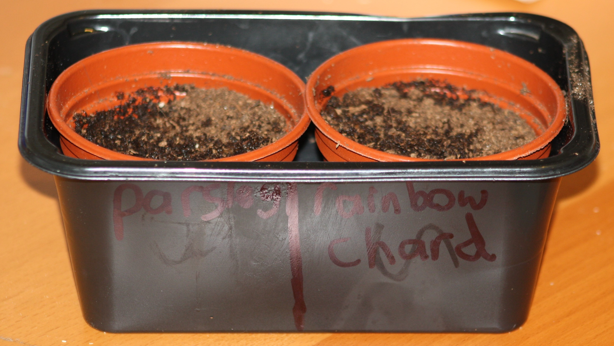
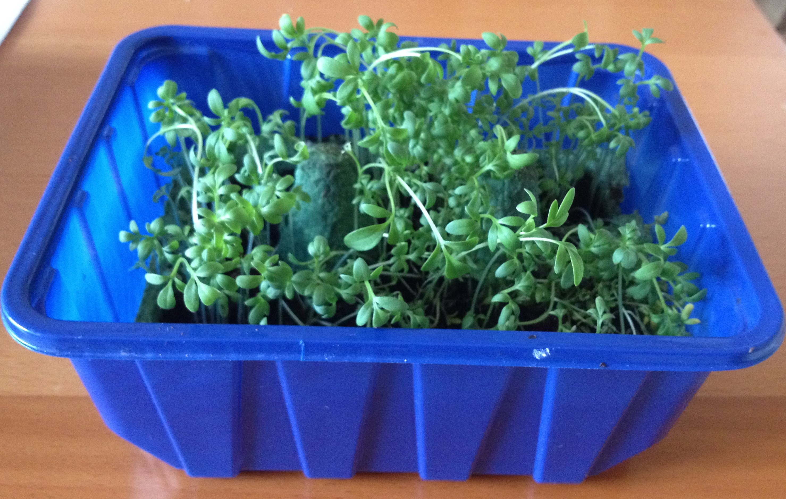
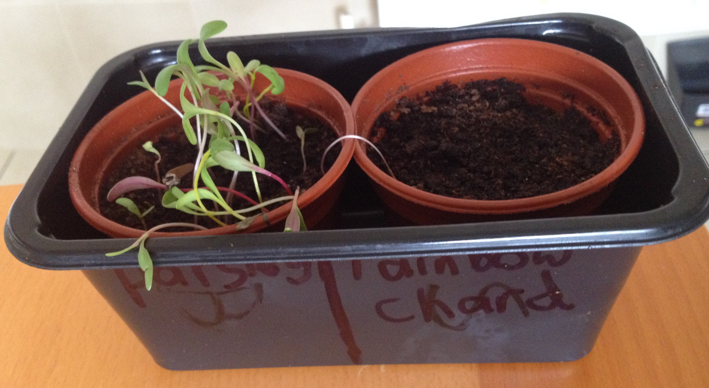
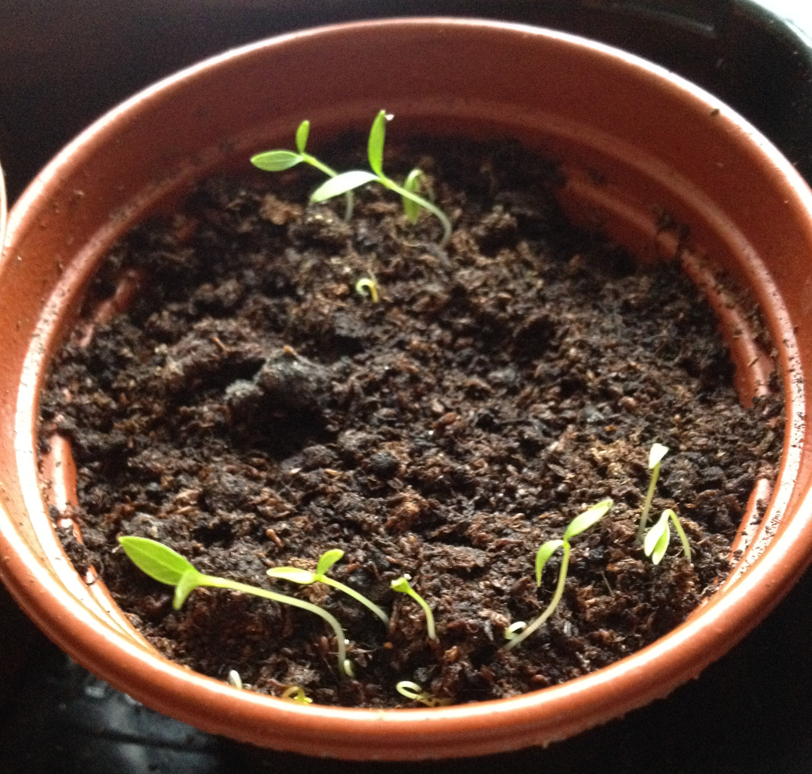

Planting cress, parsley and chard.
12-Jun-2017 | Milku
And they're growing.
It's Day 12 of 30 Days Wild and we're finding it hard to get involved with nature in the middle of Blackpool. It doesn't look like any creatures have moved into our bug hotel. The spider catcher hasn't enticed a spider to set its trap there. And it doesn't look like our rainwater is spawning any new life. But there's always the option of growing something new.

The primary school that my little humans attend is starting to do gardening again. They’ve added a big greenhouse to the grounds and have plans to create a wild garden. To get ready for Professor Sprout’s herbology classes…OK maybe the professor doesn’t teach at the school…my little girls begged some compost, pots and seeds from their mum and set to work. They also decided to grow some seeds in an old eggbox just as the 365 Outdoor Activities You Have To Try book suggested. Good job their dad had finished the eggs for breakfast.
They filled the pots and divided up the seeds. They sowed cress in the eggbox.
Rainbow chard and parsley have been planted in small plant pots.
 They soaked the pots in water to give the seeds a good start and then set them aside to germinate.
And because I insisted they actually show you something they've grown, I have to tell you that they planted the seeds 10 days ago. They checked how things were growing after a week, but had to wait until today before the parsley had grown enough to show you.
After a week, the cress was growing well and the rainbow chard had germinated.
 I've no idea what rainbow chard tastes like, but it sounds colourful. No doubt I'll have to try some unless someone can tell my humans that it isn't good for me.
After 10 days, the parsley is growing, but the cress is starting to look less vibrant. I did taste that. I can't say I'm a fan, but it was OK.
